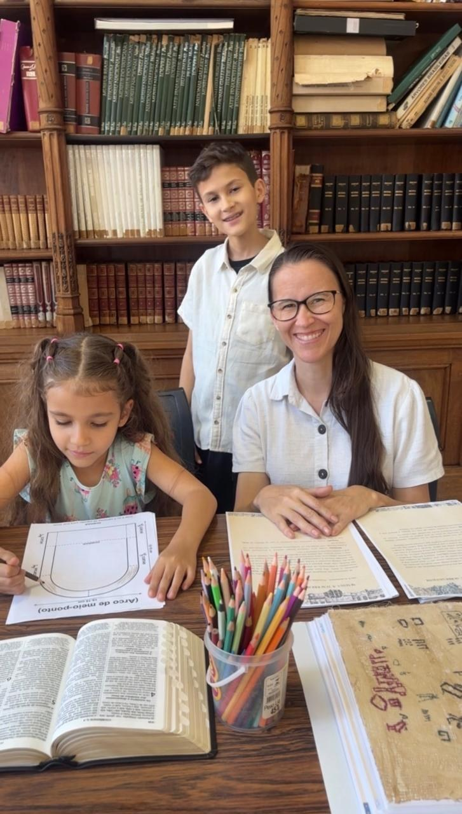

Fé
Cremos que toda educação deve nos aproximar da verdade e Daquele que é a própria Verdade. Por isso, nossa fé está no coração de cada material que criamos.
Fé, família e educação — conheça a história por trás da Casa Maceno.

Eu sou a Valéria de Maceno, cristã, professora de Língua Portuguesa e, há mais de uma década, mãe educadora.
Em 2014, eu tinha o emprego dos sonhos, o salário dos sonhos e o cargo dos sonhos. Eu havia “chegado lá”. Todos os dias me maquiava, arrumava o cabelo, calçava o salto alto e saía para o trabalho. Foi nesse mesmo ano que Deus nos enviou o primeiro filho. E, de repente, compreendi que eu ainda não havia chegado. Quando nosso menino nasceu, foi como se uma chave tivesse virado em nossas vidas. Meu esposo e eu descobrimos o quanto ainda precisávamos estudar e aprender… para podermos ensinar.
Desde então, o Senhor tem nos sustentado nessa jornada. Já se passaram mais de dez anos de educação domiciliar. Quando me perguntam se pretendo voltar ao trabalho formal, sorrio com sinceridade e respondo: não. O salto alto e a maquiagem de todos os dias foram trocados por chinelo e coque. O pagamento mensal deu lugar a abraços apertados e a muitos “eu te amo” ao longo do dia. Foi desse chamado que nasceu a Casa Maceno: um espaço para criar materiais que apoiem outras famílias na mesma jornada, com conteúdo sólido, belo e enraizado na tradição clássica cristã. E, no dia tão esperado por nós, cristãos, quando o Senhor me perguntar: “Onde estão os teus talentos?”, eu quero poder responder: “Estão aqui, Senhor. Eu os ensinei a andar no caminho da retidão, rumo à Sião Celestial.”
Nossa missão é servir às famílias que educam em casa, oferecendo materiais que unem conhecimento, beleza, verdade e virtude, segundo os princípios da educação clássica cristã.
Queremos cultivar nas crianças o maravilhamento diante da criação, o amor pela verdade e o desejo de aprender, formando não apenas alunos, mas pessoas sábias, virtuosas e capazes de contemplar o mundo à luz de Deus.
Cremos que toda educação deve nos aproximar da verdade e Daquele que é a própria Verdade. Por isso, nossa fé está no coração de cada material que criamos.
Acreditamos na família como protagonista da educação e desejamos ajudar pais e filhos a descobrirem juntos a beleza e a riqueza do conhecimento.
Nossa educação busca muito mais do que transmitir informações: queremos despertar o amor pelo conhecimento, cultivar virtudes e ensinar a contemplar o verdadeiro, o belo e o bom.